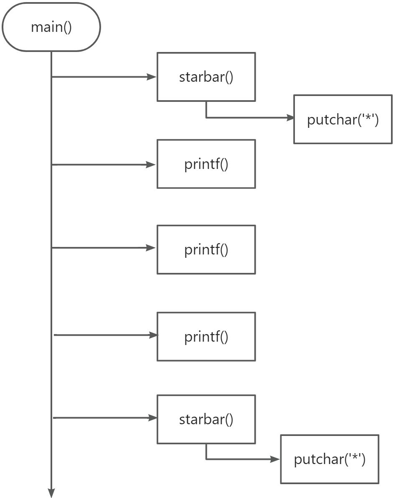
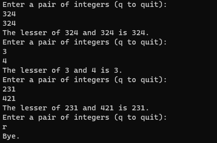

5 函数
1、概念（function）
是完成特定任务的独立程序代码单元，语法规定了函数的结构和使用方法
//代码 mian()函数 starbar()函数
/* lethead1.c */
#include <stdio.h>
#define NAME "GIGATHINK, INC."
#define ADDRESS "101 Megabuck Plaza"
#define PLACE "Megapolis, CA 94904"
#define WIDTH 40
void starbar(void);//函数的原型
//第一个void说明函数无返回值，第二个在括号内void表明函数不带参数
//分号表明这个是声明函数，不是定义函数
int main(void)
{
starbar();
printf("%s\n", NAME);
printf("%s\n",ADDRESS);
printf("%s\n", PLACE);
starbar();
return 0;
}
void starbar(void)
{
int count;
for (count = 1; count <= WIDTH; count++)
putchar('*');
putchar('\n');
}
/*该程序的输出如下：
****************************************
GIGATHINK, INC.
101 Megabuck Plaza
Megapolis, CA 94904
****************************************
*/
2、程序分析
starbar()可以作为一个黑河盒，他的功能是实现打印出40个星号，它不需要和主函数通信

3、函数参数
//案例 -针对上述的代码实现打印的文字能居中
#include <stdio.h>
#include <string.h>
#define NAME "QITE"
#define ADDRESS "QITE SHI ZHU"
#define PLACE "QITE SHI DOGDONGXI"
#define WIDTH 40
#define SPACE ' '
void show_n_char(char ch, int num);
int main(void)
{
int spaces;
//调用show_n_char()函数，并将传递参数给ch ， num
show_n_char('*', WIDTH); /* 用符号常量作为参数 */
putchar('\n');
show_n_char(SPACE, 12); /* 用符号常量作为参数 */
//用表达式作为参数：show_n_char(SPACE, (WIDTH-strlen(NAME))/2);
printf("%s\n", NAME);
spaces = (WIDTH - strlen(ADDRESS)) / 2; /* 计算要跳过多少个空格*/
show_n_char(SPACE, spaces); /* 用一个变量作为参数*/
//用表达式作为参数：show_n_char(SPACE, (WIDTH - strlen(ADDRESS))/2);
printf("%s\n", ADDRESS);
show_n_char(SPACE, (WIDTH - strlen(PLACE)) / 2);
printf("%s\n", PLACE); /* 用一个表达式作为参数
*/
show_n_char('*', WIDTH);
putchar('\n');
return 0;
}
/* show_n_char()函数的定义 */
void show_n_char(char ch, int num) //带参数函数，
{
int count;
for (count = 1; count <= num; count++)
putchar(ch);
}
//打印出的内容：
/*
****************************************
QITE
QITE SHI ZHU
QITE SHI DOGDONGXI
****************************************
*/
4、定义带形式参数函数
带参函数的形式：
void function(type parameter1,type parameter2)
//parameter---译：参数
// void show_n_char(char ch, int num) ch 和num被称为形式参数（formal parameter）
注：每个便变量前都要声明类型
5、黑盒视角
show_n_char(), 待显示的字符和显示的次数是输入。 执行后的结果是打印指定数量的字符。输入以参数的形式被传递给函数。这 些信息清楚地表明了如何在 main()中使用该函数。而且，这也可以作为编写 该函数的设计说明。
黑盒方法的核心部分是：ch、num和count都是show_n_char()私有的局部 变量。如果在main()中使用同名变量，那么它们相互独立，互不影响。也就 是说，如果main()有一个count变量，那么改变它的值不会改变show_n_char() 中的count，反之亦然。黑盒里发生了什么对主调函数是不可见的。
6、使用return从函数中返回值
//被调函数将值传递给主函数
#include <stdio.h>
#include <string.h>
//lesser.c -- 找出两个整数中较小的一个
int imin(int, int);
int main(void)
{
int evil1, evil2;
printf("Enter a pair of integers (q to quit):\n");
while (scanf("%d %d", &evil1, &evil2) == 2)
{
printf("The lesser of %d and %d is %d.\n",evil1, evil2, imin(evil1, evil2));
printf("Enter a pair of integers (q to quit):\n");
}
printf("Bye.\n");
return 0;
}
int imin(int n, int m)
{
int min;
if (n < m)
min = n;
else
min = m;
return min;
}

返回值不仅可以赋给变量，也可以被用作表达式的一部分。例如，可以 这样：
answer = 2 * imin(z, zstar) + 25;
printf("%d\n", imin(-32 + answer, LIMIT));
#define _CRT_SECURE_NO_WARNINGS
#include <stdio.h>
#include <string.h>
int imin(int, int);
int main(void)
{
int answer;
int evil1, evil2;
answer = 5*imin(scanf("%d", &evil1),scanf("%d", &evil2))+10;
printf("%d\n", imin(-12 + answer,answer));
return 0;
}
int imin(int n, int m)
{
int min;
if (n < m)
min = n;
else
min = m;
return min;
}
7、函数类型
概述：声明函数必须声明函数类型。带返回值的函数类型应该与其返回值类型相同，而无返回值的函数应声明为void类型
8、递归函数
概述：函数自己调用自己，被称为递归函数
递归的基本原理：
每级函数调用都有自己变量
每次函数调用都会返回一次
递归函数中位于递归调用之前的语句，均按照被调函数的顺序执行。
递归函数中位于递归调用之前的语句，均被调函数相反的顺序执行。
虽然每集递归函数都有自己的变量，但并没有拷贝函数的代码。
递归函数必须有停止调用的语句，否则会进入无限循环。
#include <stdio.h>
void up_and_down(int);
int main(void)
{
up_and_down(1);
return 0;
}
void up_and_down(int n)
{
printf("Level %d: n location %p\n", n, &n);
if (n < 4)
up_and_down(n + 1);
printf("LEVEL %d: n location %p\n", n, &n);
}
9、尾递归
最简单的递归形式是把递归调用置于函数的末尾，即正好在 return 语句 之前。这种形式的递归被称为尾递归（tail recursion），因为递归调用在函 数的末尾。尾递归是最简单的递归形式，因为它相当于循环。